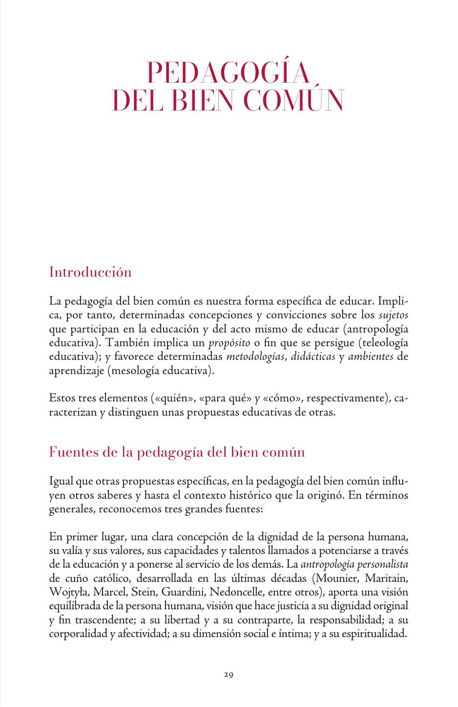
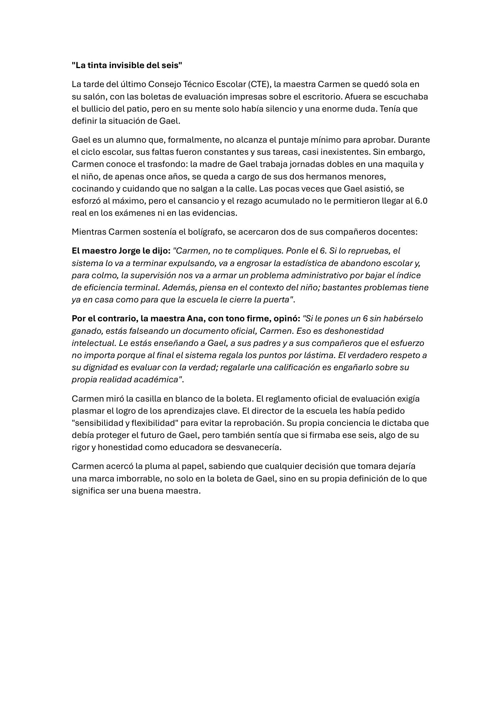

Ensayo · Ética y tutoría en la educación superior
Pedagogía del Bien Común
Un estilo educativo que no busca solo que el estudiante apruebe materias, sino formar personas capaces de convivir, servir y transformar su entorno.
¿Qué haces cuando ayudar a un estudiante parece chocar con ser justo con todos?
Qué significa la Pedagogía del Bien Común
No se trata solo de aprender contenidos o pasar materias. Se trata de formar personas completas, capaces de convivir, servir y transformar su entorno.
El documento de UPAEP presenta la Pedagogía del Bien Común como un estilo educativo: responde tres preguntas básicas —quién es la persona que aprende, para qué se educa y cómo se diseñan experiencias formativas.
No es una dinámica aislada de clase ni una técnica suelta, sino una forma de entender la educación entera.

-
01
Integralidad
Educar a toda la persona, no solo su rendimiento académico.
Ejemplo: tutorías que atienden desempeño, contexto, hábitos y emociones. -
02
Alteridad
Reconocer al otro como alguien distinto, valioso y digno.
Ejemplo: diálogo respetuoso en grupos diversos. -
03
Don
Entender que los talentos no son solo para beneficio individual.
Ejemplo: proyectos profesionales con impacto social. -
04
Amor
Salir del egoísmo y orientar la vida hacia algo más grande.
Ejemplo: compromiso ético, social y comunitario.
el bien común
Reconocer que cada persona ya es un bien por su dignidad.
el bien común
Crear relaciones educativas que construyan comunidad y encuentro.
el bien común
Formar agentes capaces de transformar realidades injustas.
Ética y comunidad de cuestionamiento
La ética aparece cuando una regla no basta: cuando hay una persona concreta, una decisión difícil y consecuencias para otros.
La ética no es solo “portarse bien”
Con Roger-Pol Droit, la ética puede explicarse como la reflexión sobre la conducta cuando enfrentamos situaciones nuevas. La moral entrega reglas y valores recibidos; la ética pregunta cómo actuar cuando esas reglas chocan con una realidad concreta.
En el caso de Carmen, la regla dice que Gael no alcanza el mínimo. La realidad dice que Gael cuida a sus hermanos, falta por una carga familiar y aun así intenta aprender. Ahí empieza el dilema.
Antes de ver un expediente, una boleta o un promedio, el docente se encuentra con un rostro.Lente filosófico inspirado en Emmanuel Lévinas

El caso de la maestra Carmen y Gael
Carmen debe decidir si pone o no una calificación aprobatoria. Gael no alcanza formalmente el mínimo, pero vive una situación familiar que afecta su asistencia y desempeño. Dos colegas le ofrecen salidas opuestas: aprobarlo por sensibilidad o reprobarlo por honestidad evaluativa.
Lévinas ayuda a no reducir a Gael a una cifra. Pero la responsabilidad por Gael no autoriza a destruir la verdad de la evaluación. La salida madura exige comunidad de cuestionamiento.
Parece proteger a Gael
Evita una reprobación inmediata, pero puede falsear la evaluación y dañar la confianza del grupo.
- Riesgo: convertir la compasión en arbitrariedad.
- Pregunta ética: ¿puedo explicar esta decisión sin esconder información?
Comunidad de cuestionamiento: preguntas que sostienen la decisión
- Dilema¿Qué valor está chocando aquí: verdad, cuidado, justicia, permanencia, confianza institucional?
- Rostro¿Qué le debemos a Gael como persona concreta, no como indicador?
- Comunidad¿Qué le debemos al grupo que confía en que la evaluación significa algo?
- Ruta¿Qué vías institucionales existen antes de aprobar o reprobar en privado?
La vinculación con tu institución
Sí, la vinculación es directa en las instituciones de educación superior en México: no solo transmiten conocimientos, forman profesionistas que tomarán decisiones con impacto social.
Las IES mexicanas trabajan con estudiantes que enfrentan desigualdades económicas, familiares, laborales, emocionales, digitales y culturales. Por eso la pregunta ética no es secundaria: atraviesa la tutoría, la evaluación, las becas, el currículo, el servicio social y la cultura institucional.
| Área institucional | Aplicación del bien común | Pregunta ética |
|---|---|---|
| Tutoría | Acompañar al estudiante como persona completa, no solo como trámite. | ¿Lo estoy viendo como persona o como caso? |
| Evaluación | Usar criterios claros, evidencias y oportunidades formativas. | ¿Estoy siendo justo o solo rígido? |
| Becas y apoyos | Reducir barreras reales de permanencia. | ¿Quién queda fuera por condiciones que la institución puede atender? |
| Currículo | Conectar la profesión con problemas sociales reales. | ¿Para qué sociedad estamos formando? |
| MOOC y online | Crear comunidad, cuidar datos y acompañar sin vigilar de más. | ¿La plataforma ve personas o solo actividad? |
En el aula
El bien común se nota en tutorías, criterios transparentes, proyectos sociales y cultura de encuentro.
Entre modalidades
La institución debe cuidar que la flexibilidad no se vuelva desorden ni privilegio invisible.
En línea
También hay rostro aunque no haya cámara: cada entrega tardía o silencio puede esconder una historia.
Referencias de la investigación
El contenido está fundamentado. Organizado como mapa de lectura, no como bibliografía plana.
Pedagogía del Bien Común
UPAEP; Merino Fernández; Croda, Bañuelos y Lechuga. Explican pilares, principios, evaluación y experiencia institucional.
Educación como bien común
UNESCO (2015) y Locatelli (2018). Ayudan a distinguir educación como bien público, privado y común.
Ética profesional
Droit; Cortina; Ramos Serpa y López Falcón. Sostienen la deliberación, la profesión y la responsabilidad docente.
Lévinas y educación
Stanford Encyclopedia of Philosophy; Lévinas; Todd; Alexander. Fundamentan rostro, alteridad y responsabilidad.
- UNESCO. Replantear la educación: ¿Hacia un bien común mundial? (2015). unesdoc.unesco.org
- Locatelli, R. Education as a public and common good. (2018). unesdoc.unesco.org
- Bergo, B. Emmanuel Levinas. Stanford Encyclopedia of Philosophy. plato.stanford.edu
- Alexander, H. Education in Nonviolence: Levinas' Talmudic Readings and the Study of Sacred Texts. doi.org